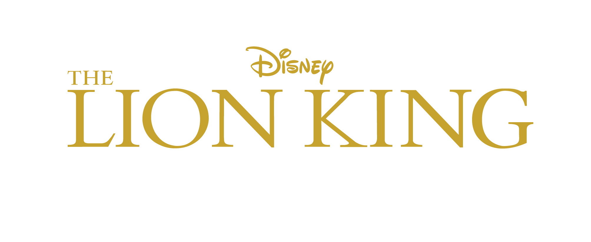

|  |
Симба
Навигация
Симба— главный герой культового диснеевского мультфильма «Король Лев», выпущенного студией Уолта Диснея в 1994 году. В фильме Симбу озвучивали актёры: Джонатан Тейлор Томас (маленького) и Мэттью Бродерик (взрослого); вокальные номера персонажа исполняли: Джейсон Уивер (маленький Симба) и Джозеф Уильямс (взрослый Симба).

Семья
- Нала(супруга)
- Киара(дочь)
- Кову(зять)
Видео
Характеристики
| Тип | лев |
| Пол | мужской |
| Дата рождения | 18 августа |
| Характер | смелый |
| Друзья | Тимон и Пумба |
| Все используемые материалы взяты с Википедии |
Kiber One, 2022 |